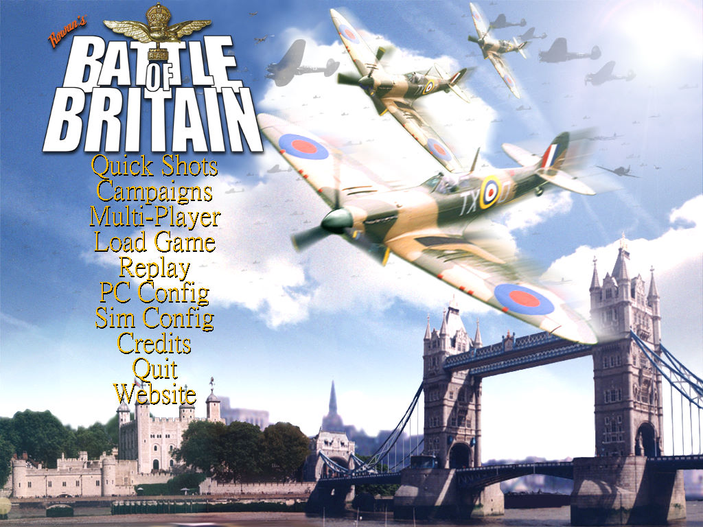
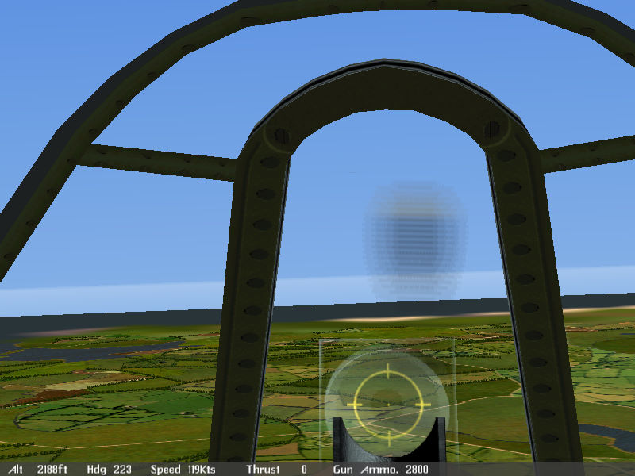

名稱：決戰英倫1／不列顛之戰1 (Rowan's Battle of Britain／Battle of Britain，英文版)
簡介：Rowan 2000年出品的飛行戰鬥遊戲，由Empire代理發行，台灣由華義代理進口，但並
未中文化 [待補]。


保護：無
備註：非安裝移機者，需修改roots.dir裡的目錄名稱（不可使用相對路徑）。
備註：VirtualBox無法執行，虛擬機請使用VMware。
檔案：bobupdate.rar = 官方更新檔
bob_v099.rar = 非官方更新檔